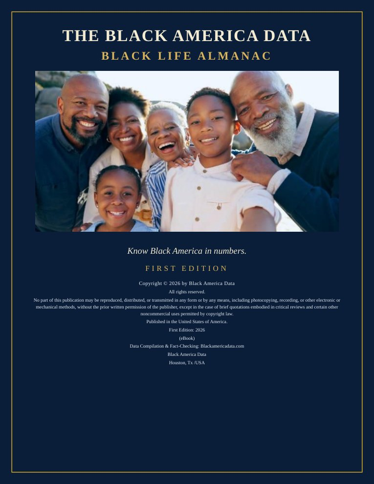

The Black Life Almanac
The Black America Data: Black Life Almanac
Know Black America in numbers.

The First Edition of the almanac gathers the reference into a single book: 670 entries across all six sections — Black Census, Black Cities, Black Business, Black Public Health, Black Education, and Black Employment — with three state and regional maps and the fifty-one largest Black place profiles in the country. Every entry carries its chart and its full source citation on the page, and the book closes with a complete index.
The First Edition is free. Download the complete book as a PDF (359 pages):
Download the Almanac (PDF, free)
Reading terms
The free edition is licensed for individual reading, not sold. Use by an institution beyond a single reader requires a written license from Black America Data; requests are taken through this website. The facts and figures in the almanac are drawn from published United States government and institutional sources, named on each page; the selection, arrangement, charts, and design of the work are the property of Black America Data.
The living reference
The almanac is the companion volume to this reference. Every entry in the book names the full article it was drawn from, and the complete reference — all sections, updated as new figures are published — lives here at Black America Data.